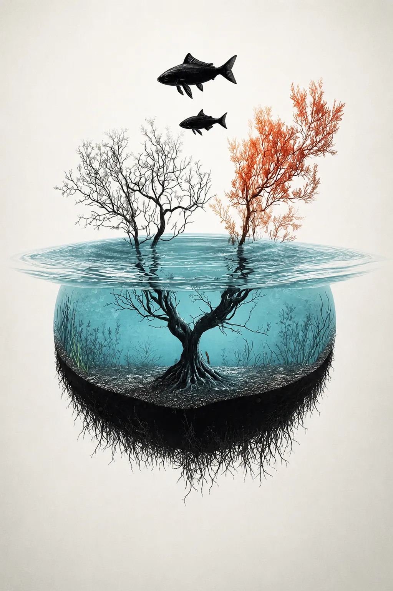

Aquaponics Learning Game
Nitrogen Cycle Puzzle
0 / 8 placed

Drop a piece into the correct place
Cycle information appears here
Drag a puzzle piece from the tray and drop it onto the matching area of the nitrogen cycle diagram.